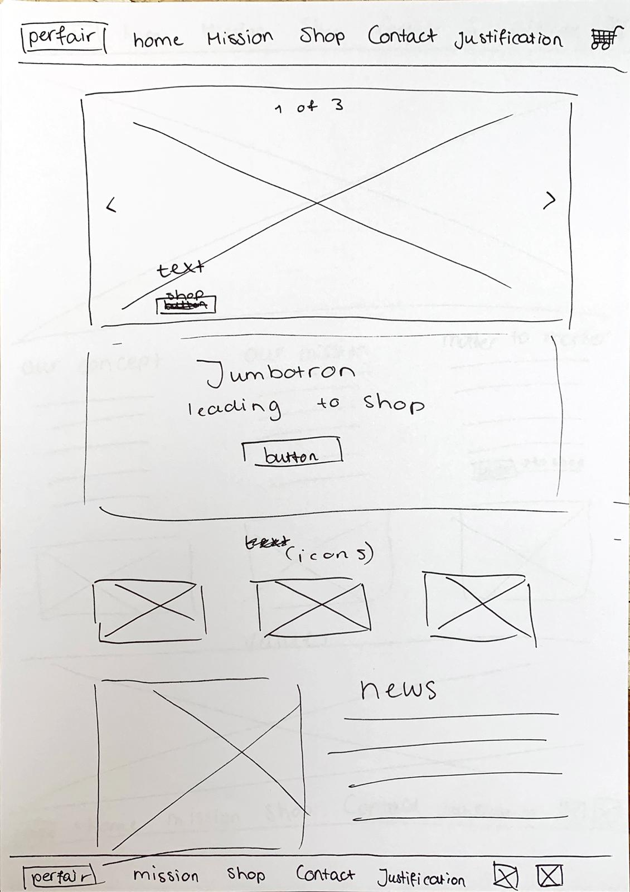
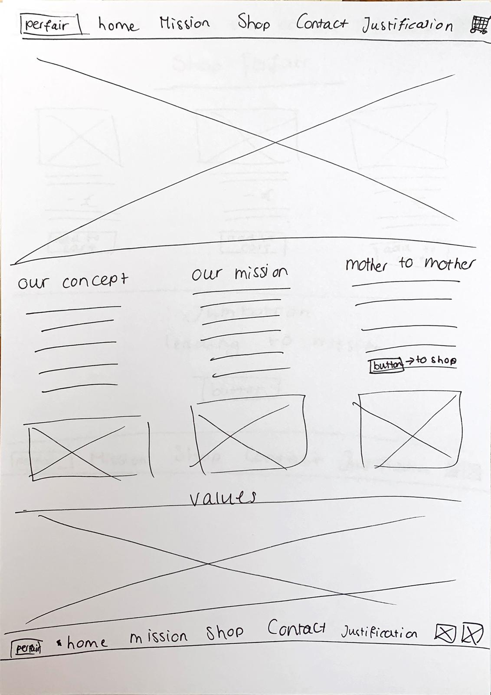
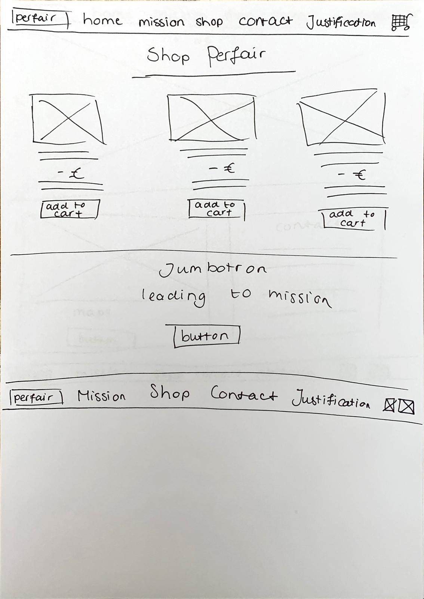
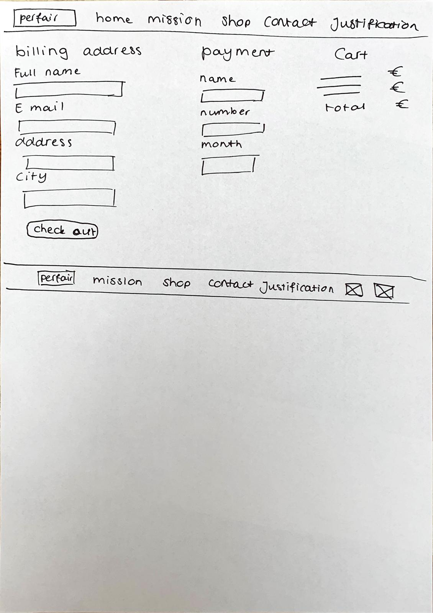
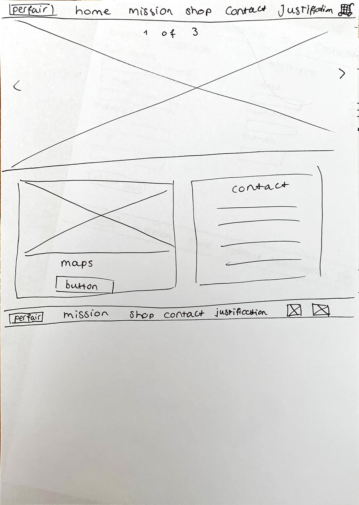
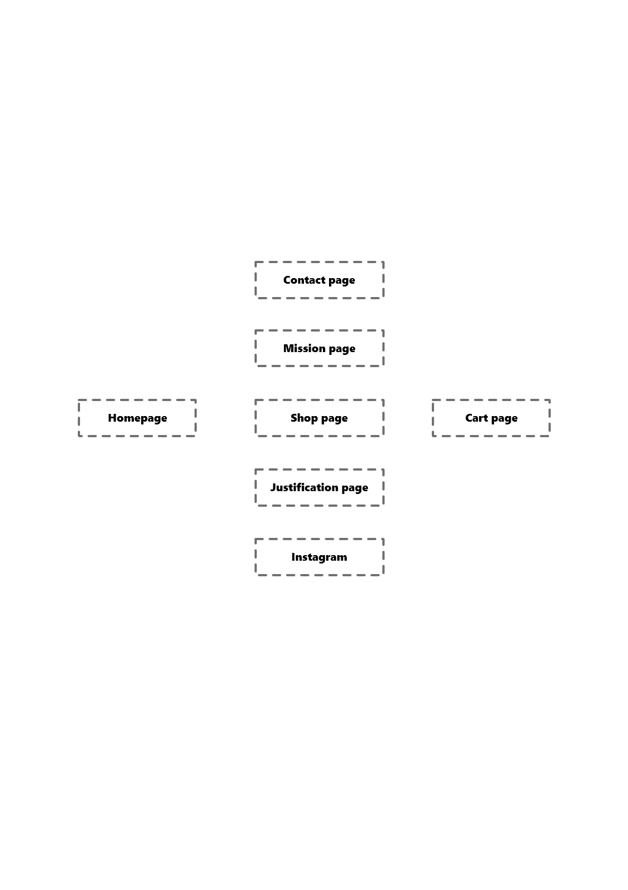
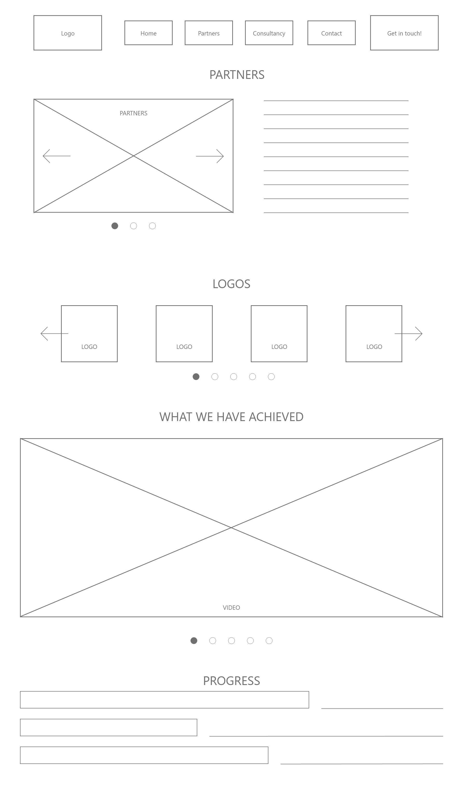

Justification
Breakdown design elements
Perfair is a company that offers products for mothers, created by mothers from developing countries. Dutch mothers can buy these products from our website. Our target group are (Dutch) mothers. We want our visitors to take action after visiting the home page; they have to visit our web shop. Besides visiting the web shop, our visitors can:
• Get informed about our vision
• See the impact of Perfair
• Shop for products
• Get in contact with Perfair
• Visit our social pages
Prototypes
To ensure our visitors have the best viewer experience whilst visiting our website, we created prototypes which our target audience was able to view and test. With the outcomes and feedback we were able to improve our website to attract our target audience.
Paper prototype #1
Homepage
Paper prototype #2
Mission page
Paper prototype #3
Shopping page
Paper prototype #4
Shopping cart page
Paper prototype #5
Contact page
Flow diagram
Perfair's website flow diagram
Wireframe #1

Wireframe #2
User Testing Report
Concerning the user testing, we created a number of different scenarios that the user had to navigate his/her way through the Prefair paper prototype. These paper prototypes created were the basic set up of each page. Using sticky notes we labeled each page with different names to help give an indication to which page they were on. We presented the paper prototype to four different participants, we asked them to complete the following scenarios:
- Read the company vision
- Go to previous clients and choose one you’d like to read
- Book an appointment for your first consultancy
- Visit headquarters location via link Google Maps
- Locate the contact information
- Return to homepage
During the duration of the user testing the navigation flow of the user was analysed to see how functional the paper prototype version was. After the testing was finished feedback was given by the users which were noted for the development of our website. Through these testings the group wants to gain an understanding if the current layout of the Prefair website is effective.
In order to review feedback and further analyze the navigation flow of the website the tests were recorded (With the permission of the participants). All four of the participants stated that the current paper prototype is a great basis, this was regarding the structure and layout of the prototype. The navbar creates an easy navigation to find your way through each page. The interactive elements (the buttons) within the paper prototype additionally adds an enjoyable graphical user interface.
In order to test the usability of the paper prototype of our website we observed the user testing videos and checked the five E’s of usability. Effective, the website was successful and in each test the user was able to achieve the goal of each scenario. The use of the “Get in Touch!” button is an effective way to get the user to book an appointment with the consultancy. Efficient, the website with its simplistic but effective layout there was no hesitation in all four participants and navigated themselves through the website with no problems. This additionally applies to ease of use. Engaging, the website has a number of different images, videos and interactive buttons. This effectively created the user to feel engaged once using the paper prototype website. Error tolerant, there were no errors when trying to use the paper prototype, the only possible error there could have been is not filling in information to book an appointment on the consultancy page.
User prototype testing #1
User prototype testing #2
Fonts & color codes used
The fonts and colors used are reflected in our Perfair brandbook. The colors contain earth tones, resembling good care for our world and inhabitants.
Fonts:
• Headings: Aleo, serif
• Body: Segoe UI
Colors:
• Titles: #A63C0E (red-brown)
• Buttons: #A63C0E (red-brown)
• News background: #607462 (olive green)
• Background: #F8F1E7 (cream white)